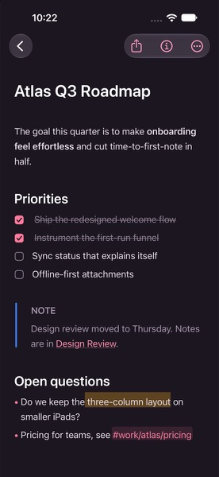
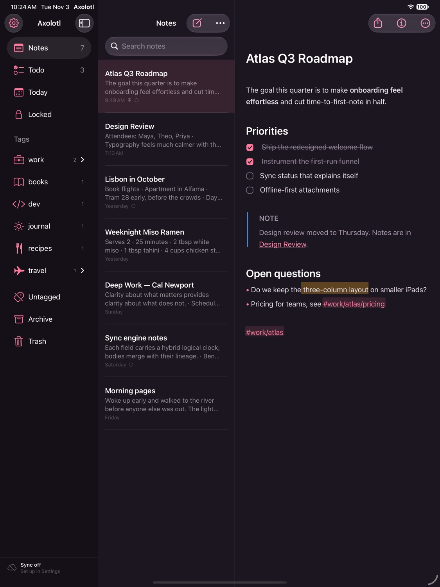
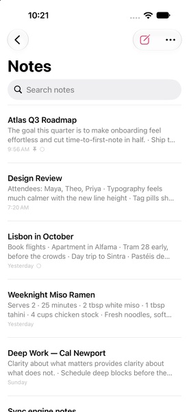

Your notes,
beautifully kept.
Axolotl is a calm, fast Markdown notes app for Mac, iPhone and iPad. Write freely, organize with a single #, and sync privately between your devices.
The goal this quarter is to make onboarding feel effortless and cut time-to-first-note in half.
9:48 AMAttendees: Maya, Theo, Priya · Typography feels much calmer with the new line height
7:12 AMBook flights · Apartment in Alfama · Tram 28 early, before the crowds
YesterdayServes 2 · 25 minutes · 2 tbsp white miso · 1 tbsp tahini
YesterdayClarity about what matters provides clarity about what does not.
SundayEach field carries a hybrid logical clock; bodies merge with their lineage.
SaturdayAtlas Q3 Roadmap
The goal this quarter is to make onboarding feel effortless and cut time-to-first-note in half.
Priorities
Open questions
- Do we keep the three-column layout on smaller iPads?
- Pricing for teams, see #work/atlas/pricing

Markdown, minus the clutter
Formatting shows as you write and steps aside when you're done, so every note reads like a finished page.
Organized by a single #
Type a tag anywhere in a note. Nest tags, give them icons, and the sidebar organizes itself around you.
Private by default
No account and no tracking. Your notes live on your devices and sync end-to-end encrypted.
Write in Markdown.
Read a page.
The asterisks and pound signs appear on the line you're editing, then quietly disappear. You get the speed of plain text and a note that looks finished.
- Headings, emphasis, highlights, callouts, tables and code
- Real checkboxes and lists that continue when you press Return
- Inline images, attachments, Apple Pencil sketches and scans
One # is all
it takes.
Add #work/atlas anywhere in a note and it's filed. Tags nest as deep as you like, take icons, and can be pinned, renamed or merged in one step.
- Link notes with
[[double brackets]]and see every backlink - Pin, archive and lock without leaving the keyboard
- Todo, Today and Locked views that keep themselves current
Find anything,
instantly.
Search understands what you mean. Combine words, phrases, tags and filters like @todo or @last7days. Text inside your photos is recognized on-device and searchable too.
"exact phrase"-exclude#tag!#only-this-taga OR b
@todo@today@images@locked@date(>2025-06-01)@backlinks
Thoughtful, down to
the last detail.
Todos that count
Every open task across your notes, collected in one place.
Locked notes
AES-256 encryption for the notes that matter, unlocked with Face ID or Touch ID.
Linked thinking
Wiki links with autocomplete, plus backlinks for every note.
Seventeen themes
Axolotl and Axolotl Night, plus Red Graphite, Dracula, Nord, Solarized, Tokyo Night, Gruvbox, Catppuccin, Rosé Pine and more. Choose separately for light and dark mode.
2× pastel de nata ... 3.00
1× galão ......... 1.80
TOTAL ........... 4.80
Text in images, found
Photos and scans are read on-device, so a search for “pastel de nata” finds the receipt.
Version history
Every change is kept. Restore an earlier version in a click.
Your words, any format
Export a note or your whole library. Import from Bear, Obsidian and other Markdown apps.
Made for the keyboard
Shortcuts for everything, Quick Open, and separate note windows on the Mac.
At home on every
screen you write on.
A native app on each device, not a web page in a wrapper. Three columns on the Mac and iPad, a focused single column on iPhone, and a formatting bar right above the keyboard.


Private sync,
no account required.
Axolotl has its own sync engine. Each device keeps a complete copy of your notes, works offline, and syncs end-to-end encrypted the moment it can.
End-to-end encrypted
One sync code holds your key. Everything that leaves a device is sealed with AES-256-GCM, so the network and any server only see ciphertext.
Device to device
On the same Wi-Fi, your Mac, iPhone and iPad find each other and sync directly, with no server and no cloud.
Edits that merge
Edit the same note on two devices and both changes survive. Concurrent edits merge word by word instead of overwriting each other.
Free, open source,
and yours.
No subscription and no account. Every build is published on GitHub Releases.
Mac
macOS 14 Sonoma or later · Apple silicon and Intel
The first time you open Axolotl, right-click it in Applications and choose Open. Or run:
iPhone & iPad
iOS and iPadOS 17 or later
Install with AltStore, SideStore or Sideloadly. Or open the project in Xcode and run it on your device.
Sync relay
Optional · one file · Node 22+ or Docker
Run it anywhere to sync while you're away from home, then add its URL in Settings → Sync.
Questions
Is Axolotl really free?
Yes. Every feature is free, there's no subscription, and the source code is MIT licensed on GitHub.
Where are my notes stored?
In a local database on each of your devices. Nothing leaves a device unless you turn on sync, and when you do, it's encrypted before it's sent.
How does sync work without an account?
Turning on sync creates a private sync code. Enter it or scan its QR code on your other devices. Devices on the same network then sync directly. To sync while apart, run the small open-source relay on any server. It only ever stores encrypted data.
What if I edit the same note on two devices?
Both edits are kept. Axolotl tracks each note's revision history and merges concurrent changes word by word. In the rare case that changes can't be merged, the other version is saved as a separate copy, so nothing is lost.
Why isn't it on the App Store yet?
Builds are published directly on GitHub for now. On iPhone and iPad, install it with AltStore, SideStore or Sideloadly, or build it from source in Xcode.
Can I bring my notes from Bear or Obsidian?
Yes. Export as Markdown or TextBundle, then use Import in Settings. Tags, links, todos and images come along.